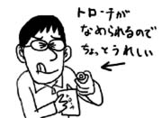
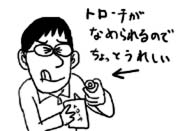
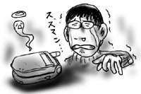

昨夜から喉の調子が本格的に悪いのです．痛むわけではないのですが，ろくに声が出ません．
ハスキーボイスを通り越して，ほとんどしゃがれ声．たまに本当に声が出ないんです．喉以外はいたって普通．鼻水もほとんど出ないし，熱は先日の先行発売で完売した(間違い)のでありません．
というわけで，しゃべらなければほとんど苦しくないため，サム(trf)の実家で貰って来たトローチを舐めながら一日中引きこもっていました．普段通りと言えば，その通りです．
昨夜から喉の調子が本格的に悪いのです．痛むわけではないのですが，ろくに声が出ません．
ハスキーボイスを通り越して，ほとんどしゃがれ声．たまに本当に声が出ないんです．喉以外はいたって普通．鼻水もほとんど出ないし，熱は先日の先行発売で完売した(間違い)のでありません．
というわけで，しゃべらなければほとんど苦しくないため，サム(trf)の実家で貰って来たトローチを舐めながら一日中引きこもっていました．普段通りと言えば，その通りです．
携帯電話が黄泉がえりました．
乾いていく段階で，最初は電池とアンテナの表示が復帰．その後徐々に表示領域が広がり，操作も一部可能なまでに回復．そこから一日放置したら完全復活した様子で，今のところ何の問題もなく動いています．メモリ以外は．メールも電話番号も集めた着メロも，全部消えてしまったのですが，この際文句は言いません．携帯電話復活万歳！というわけで，これを読んだ人は僕に電話番号を教え直して下さい．お願いします．
今日は午前中休みを取って歯医者へ行きました．最近の歯医者ってすごいのな！
椅子に座ると目の前の液晶ディスプレイにカルテNo.と僕の名前が表示されています．初診ということで，すぐにレントゲンを撮ったのですが，昔のように板を口にはさんでおえっとなって「動かないで！」と注意される，ということもなく，あごをのせてぼうっとしていると顔のまわりをマシンが回って自動的にレントゲン撮影してくれます．こんなに楽になったのか！顔の中心を指示するためのレーザポインタもカッコイイです．
ひとしきり感動して椅子に戻ると，液晶ディスプレイにさっき撮影したレントゲン画像が表示され，またひと驚き．医師がレンズツールを駆使して画像を拡大してみせ，歯の説明を始めます．「これはアマルガムですねぇ．治療したのは10年以上前ですか？今はもう使いませんからねぇ」と言われて，何だか未来人失格の烙印を押された気分になりました(被害妄想)．
薬も，昔のようにガーゼに染み込ませて詰めるわけではなく，なんか簡単な操作でちょいちょいと詰めて終わりで実にスマート．テクノロジが世界を変えてゆきますよ！(大げさ)
携帯電話をトイレの便器(大)に落っことしました．
勤務時間のひとエレジー．個室での戦いを終えた後，ズボンをずり上げながらレバーを押し下げたはずみでポケットから携帯電話がポロリと抜け落ち，そのままぼちゃんとハマったのでした．幸いにも流し終わった後だったので急いで拾い上げ，水滴を大量のトイレットペーパーで拭き取る応急処置を施したのですが，それも空しく，途中でブブブブッと音がして(トイレだけに)画面がかき消えていきました．待ってくれよぅ．
振って水滴を全部飛ばした後，乾かしてみたのですが，その後，携帯電話が立ち上がることはありませんでした…．
というわけで，僕の携帯をご存知の方は，すいませんがしばらくの間，連絡はプロバイダのメールアドレスへお願いします．
最近，空巣が流行っており，部署の中でも，僕の右後ろの席の人，後ろの席の人，と順に二日連続でやられています．住所録でも漏れたのか，というくらいピンポイントでやられているので，下手すると次は家かも知れない！とドキドキしながら帰宅したのですが，(まだ)大丈夫だったので，ホッと胸を撫で下ろしました．
しかし油断は禁物．プレミアムパック(パスポートや通帳や印鑑の入ったソフトケース)を今までのように本棚に無造作に置いて置くのは危険だと思ったので，しばらくは目のつかないところに隠すか，持ち歩くかしたいと思います．本当はプレミアムパックにPowerBookG4も入れて隠しておきたいのですが，それはあまりに不便すぎるので，不安ですが，そのまま机に置いておくことにします．
水分補給と称してアセロラドリンクをがぶ飲みしたのが効いたのか，一日で熱が下がりました．あと，ビタミンEを作り出すぞ，と熱に冒された頭で決意し，カーテンを開け放して太陽光を浴びまくったのがよかったかどうかは定かではありません．
というわけで今日はなんとか会社に行けたのですが，病み上がりということもあり，通勤時のBGMとしてSigur Ros「( )」を選択．超陰鬱で，間違った方向にムード盛り上げ楽団です．もちろん腐れAvexが発売しているCCCD仕様の日本盤ではなく，輸入盤で買いました．
しかし，こういう音楽が売れているというのは嬉しい反面，恐ろしくもありますね．
風邪で寝込みました．体の節々がだるく，ガクガクブルブル，天井がものすごい勢いで歪んで落ちてきます．あーこれはダメだ．速攻で会社に休みの電話を入れました．
今日は，本当は朝一で都心方面まで出張の予定だったのですが，こういう何かある日に限って調子悪くなるのが僕の体の常なのです．
例えば，会社で避難訓練が行われる日に限って寝坊するなんてのはお手のものです．みんなが渋々参加しているところに居合わせないため，目立つことこの上ありません．
後から伝え聞いた話によると，今回も，朝礼でボスに「○○くんと△△くんは出張先に直行です．ミズグチくんも行くはずだったのですが，高熱でひっくり返っているらしく，お休みです」などと発表されたようで，またしても目立ってしまいました．消えてしまいたい！
こういう日は，NHK教育で「ふえは歌う」が「歌えリコーダー」に変わっている事実に驚愕しながら，風邪薬をかっくらって寝るのにつきます．

おやすみなさい．